| Текст: английский | русский |
MYTH
Мод для Diablo II: Lord of Destruction v1.13c Версия мода 1.5.2 (ENG) Описание
Изменения
в
версияхНовые монстры Новые уникальные монстры Камни и руны Уникальные вещи Комплекты Убер вещи Убер уровни Рецепты куба Руневорды Cкриншоты Новые уникальные
монстры
Thousand Pounder 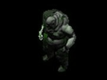 Уровень монстра: 16 / 48 / 78 Иммунитет: к физическому, холоду и яду. Специальные атрибуты: быстрый, случайная аура. Навыки: силён, отравленный удар, при высокой опасности убегает. Место обитания: Monastery Gate. Приспешники: 6 Drowned Deads. King Leoric
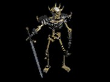 Уровень монстра: 18 / 50 / 80 Иммунитет: к физическому, молниям и яду. Заменяет: Bone Ash (Burning Dead Mage) Специальные атрибуты: сопротивление к магии, сильный, мульти выстрел. Навыки: воскрешает мёртвых, ядовитое дыхание, невосприимчив к негативным навыкам и проклятьям. Место обитания: Cathedral. Приспешники: 7 Wraths. Devourer of the Dead 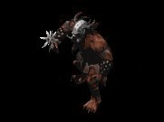 Уровень монстра: 21 / 57 / 83 Иммунитет: к молнии и магии. Специальные атрибуты: проклинает, случайная аура. Навыки: мощный удар и парализующая атака. Место обитания: Valley of Snakes. Приспешники: 6 Rippers. Horror from the Distant Desert 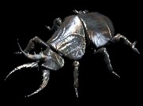 Уровень монстра: 26 / 57 / 82 Иммунитет: к молнии и яду. Специальные атрибуты: электризуется, мультиплевок, умерая травит. Навыки: откладывает яйца с Giant Lampreys, плюётся ядом, дополнительный урон от молнии. Место обитания: Canyon of the Magi. Приспешники: 4 Giant Lampreys. Master of Puppets 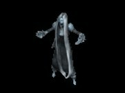 Уровень монстра: 25 / 58 / 85 Иммунитет: к огню и магии. Специальные атрибуты: проклинает, спектральный удар, умерая взрывается. Навыки: Teeth, Bone Spirit, Bone Spear, дополнительный урон от магии. Место обитания: Great Marsh или Flayer Jungle. Приспешники: 8 Warlocks. The Butcher
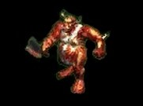 Уровень монстра: 32 / 68 / 95 Иммунитет: к огню и яду. Заменяет: Battlemaid Sarina (Flesh Hunter) Специальные атрибуты: быстрый, умерая взрывается, живучий. Навыки: очень быстр, силён и дополнительно атакует огнём, невосприимчив к негативным навыкам и проклятьям. Место обитания: Ruined Temple. Приспешники: 6 Mud Mans. Remorhaz 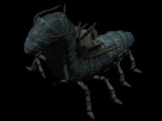 Уровень монстра: 27 / 65 / 85 Иммунитет: к холоду и яду. Специальные атрибуты: быстр, сильный, ворует ману. Навыки: Nova, дополнительный урон от молнии. Место обитания: Kurast Causeway. Приспешники: Нет. Ancient Evil 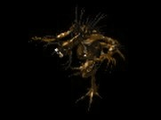 Уровень монстра: 29 / 68 / 83 Иммунитет на аду: к физическому и огню. Специальные атрибуты: отравленный удар, умерая взрывается. Навыки: быстр, силён, дополнительный урон от огня, невосприимчив к негативным навыкам и проклятьям. Место обитания: Chaos Sanctum. Приспешники: 4 Abyss Beasts. Doomsday 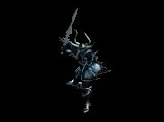 Уровень монстра: 30 / 69 / 84 Иммунитет: к молнии и холоду. Заменяет: Lord De Seis (Oblivion Knight) Специальные атрибуты: сильный, аура "Fanaticism". Навыки: различные виды магических ударов. Место обитания: Chaos Sanctum. Приспешники: 6 Black Knights. The Thing 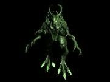 Уровень монстра: 37 / 75 / 90 Иммунитет: к холоду. Заменяет: Thresh Socket (Blood Bringer) Специальные атрибуты: проклинает, случайная аура, магические сопротивления. Навыки: силён, живуч, дополнительный урон от магии, невосприимчив к негативным навыкам и проклятьям. Место обитания: Arreat Plateau. Приспешники: 4 Baals Minions. Ashkael 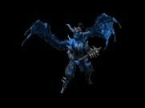 Уровень монстра: 36 / 73 / 85 Иммунитет: к огню и магии. Специальные атрибуты: проклинает, случайная аура, быстрый. Навыки: колдует, превращает приспешников в бомбы, дополнительный урон от холода. Место обитания: Halls of Pain или Halls of Anguish. Приспешники: 8 Tuscampas. Mad Shaman The Bull's Eye 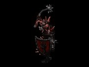 Уровень монстра: 39 / 77 / 87 Иммунитет: к физическому и огню. Специальные атрибуты: силён, мульти выстрел, электризуется. Навыки: колдовство и рукопашная атака, дополнительный урон от случайной магии, ворует ману, невосприимчив к негативным навыкам и проклятьям. Место обитания: The Worldstone Keep Level - 1 или 2, или 3. Приспешники: 8 Orog Elites. |